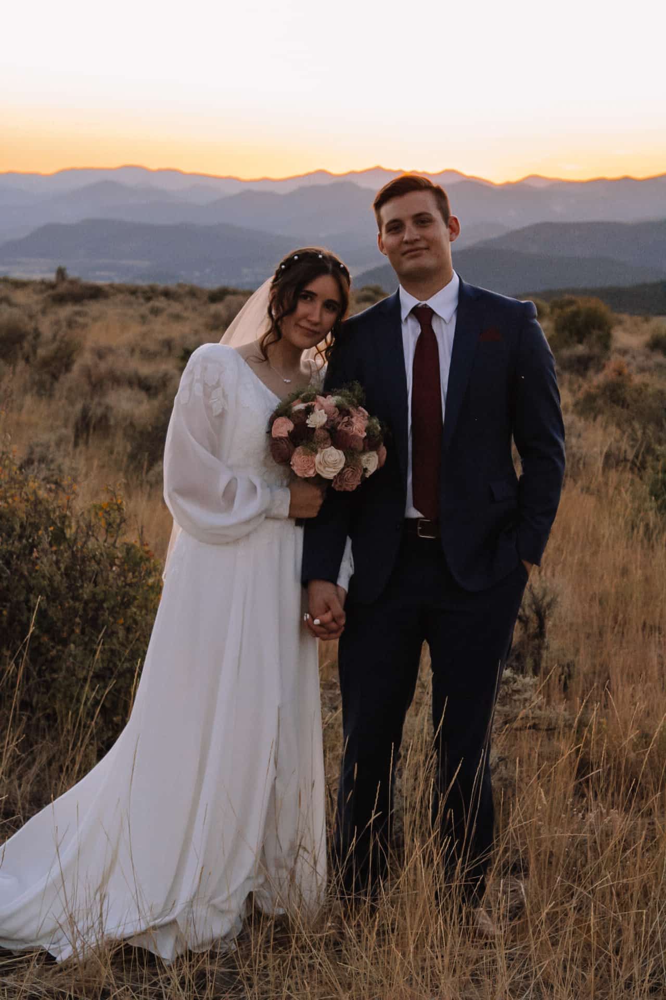

Kaylee Godfrey | WDD 130
Hello! My name is Kaylee Godfrey. I’m from Alabama, but I’ve moved around a lot throughout my life—Texas, Arizona, St. George, and now Idaho. All that moving helped me get comfortable with change and gave me the chance to experience so many different places and people. A huge part of my story is my mission in Yakima, Washington. It was a time of a lot of growth for me, and it’s also where I met my husband. After returning home, we were married in the St. George Temple right after the renovations were finished, which made the day feel even more meaningful. We’ve now been married for a year and are both studying at BYU–Idaho. I’m majoring in web and graphic design, and I work as the web designer for Built Marketing. I love being creative—whether I’m designing, cooking, or traveling with my husband. I’m excited to keep developing my skills and learn even more about building clean, intentional websites this semester.